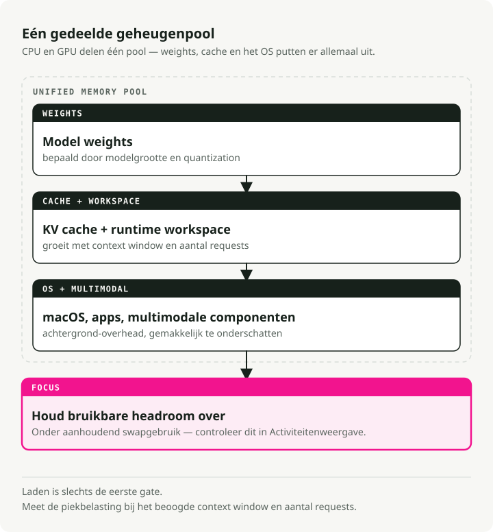
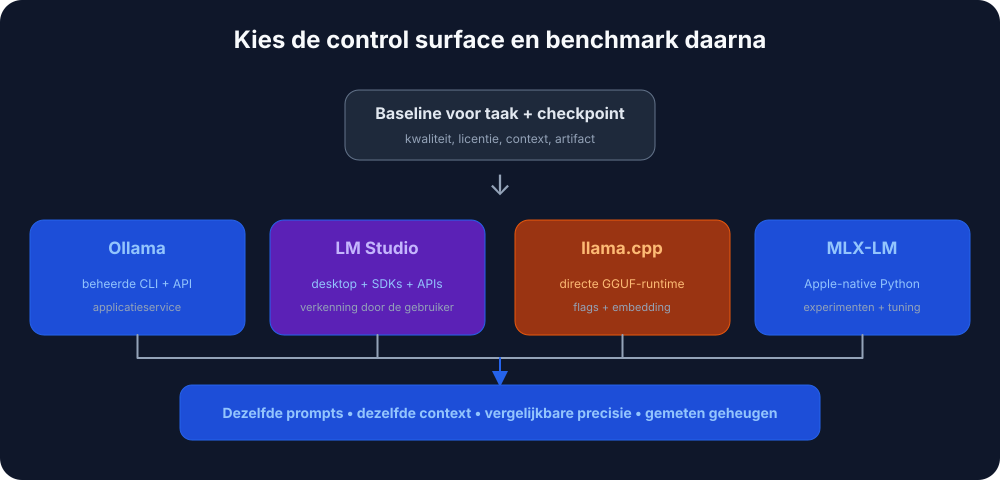

Automatische vertaling
Dit artikel is automatisch vertaald vanuit de oorspronkelijke Engelse versie.
Lokale LLM's op macOS: Ollama, LM Studio, llama.cpp, MLX en Apple Silicon
Elke prompt naar een API van derden sturen gaat snel vervelen, vooral als de helft van de prompts neerkomt op "herschrijf deze paragraaf" of "wat is het JSON-schema hiervoor". Lokale LLM's losten dat voor mij op Apple Silicon sneller op dan ik had verwacht. Een 7B-model in 4-bit-kwantisatie draait comfortabel op een MacBook met 16 GB, en de round-trip stopt bij het toetsenbord.
De open vraag is dus vanuit welke app je het aanstuurt. Ollama, LM Studio, llama.cpp, MLX en nog een paar andere tools verpakken allemaal vergelijkbare inference-engines en dezelfde GGUF-bestanden. Het verschil zit in hoeveel frictie er tussen jou en het model zit: aan de ene kant dubbelklikken en typen; aan de andere kant compileren vanaf source en daarna de man page lezen.
Kernconcepten voor lokale LLM's op macOS
- Inference: het uitvoeren van het model om tekst te genereren.
- Kwantisatie (GGUF): een techniek om de modelgrootte te verkleinen met minimaal kwaliteitsverlies. Je ziet bestandsnamen zoals
llama-3-8b-Q4_K_M.gguf. Het deelQ4betekent 4-bit-kwantisatie, wat veel minder RAM gebruikt dan de volledige 16-bit-gewichten. - Apple Silicon (Metal): Apple's M-series-chips delen RAM tussen CPU en GPU (Apple noemt dit "Unified Memory"). Daarom kan een MacBook met 32GB of 64GB modellen laden waarvoor je op een pc een dure dedicated GPU nodig zou hebben.
Vereisten
- Hardware: een Mac met Apple Silicon (M1 tot en met M4) is wat je wilt. Intel-Macs werken ook, maar zijn merkbaar trager.
- RAM:
- 8GB: prima voor kleine modellen (Mistral 7B, Llama 3 8B).
- 16GB+: comfortabel voor grotere modellen en multitasking.
- Schijfruimte: modellen zijn groot. Reken op ongeveer 10-20GB voor een bruikbare startersbibliotheek.

1. Ollama - De optie die "gewoon werkt"
Download: ollama.com
Zie Ollama als de "Docker voor LLM's". Het verpakt de llama.cpp-engine in een native macOS-package, haalt modellen op aanvraag binnen en routeert werk automatisch naar Metal. Je installeert het, voert één commando uit en je bent aan het chatten. Dit is de eenvoudigste route als je gewoon een werkende LLM en een HTTP-endpoint wilt waar je code naartoe kan wijzen.
Voorbeeldworkflow
# 1. Download and run Llama 3 (it auto-downloads if needed)
ollama run llama3
# 2. Use it in your code via the local API
curl http://localhost:11434/api/generate -d '{
"model": "llama3",
"prompt": "Explain quantum computing to a 5-year-old",
"stream": false
}'
Voor- en nadelen
| ✅ Voordelen | ❌ Nadelen |
|---|---|
Eenvoudigste setup (drag-and-drop .dmg) |
Kernapplicatie is closed-source |
Schone CLI (ollama list, ollama pull) |
Minder fijnmazige controle over generatieparameters |
| Grote bibliotheek met vooraf geconfigureerde modellen |
2. LM Studio - De visuele verkenner
Download: lmstudio.ai
LM Studio is de GUI-first-optie. Het heeft een App-Store-achtige browser om HuggingFace direct te doorzoeken, ondersteunt Apple's MLX-formaat naast GGUF (wat op sommige Macs sneller kan zijn) en biedt een OpenAI-compatibele lokale server. Bestaande clientcode die al met OpenAI praat, werkt dus meestal vrijwel direct.
Voorbeeldworkflow
Je kunt de officiële Python SDK gebruiken, of elke OpenAI-compatibele client die naar de lokale server wijst:
# Using the official LM Studio SDK
from lmstudio import LMStudio
client = LMStudio()
response = client.complete(
model="llama-3-8b",
prompt="Write a haiku about debugging."
)
print(response.content)
Voor- en nadelen
| ✅ Voordelen | ❌ Nadelen |
|---|---|
| Gepolijste, gebruiksvriendelijke interface | GUI is closed-source |
| Native ondersteuning voor zowel GGUF- als MLX-modellen | Grote download (~750MB) |
| Ingebouwde RAG (chatten met je PDF's) |
3. llama.cpp - De tool voor power users
Repo: github.com/ggml-org/llama.cpp
Dit is de engine waar bijna alle andere tools omheen gebouwd zijn. Als je maximale performance wilt, de nieuwste features wilt op de dag dat ze landen, of een LLM in je eigen C++-applicatie wilt embedden, dan is dit de bron. Het is bare-metal en lichtgewicht, maar de prijs is dat je alles zelf beheert: downloads, formaten en tientallen CLI-flags.
Voorbeeldworkflow
# 1. Install via Homebrew
brew install llama.cpp
# 2. Download a model manually (e.g., from HuggingFace)
huggingface-cli download TheBloke/Llama-3-8B-Instruct-GGUF --local-dir .
# 3. Run inference with full control
llama-cli -m llama-3-8b-instruct.Q4_K_M.gguf \
-p "Write a python script to sort a list" \
-n 512 \
--temp 0.7 \
--ctx-size 4096
Voor- en nadelen
| ✅ Voordelen | ❌ Nadelen |
|---|---|
| Volledige controle over elke parameter | Steile leercurve (alleen CLI) |
| MIT-gelicentieerd (open source) | Handmatig modelbeheer |
| Zeer lichtgewicht (<30MB) |
4. GPT4All - Privacy-first en RAG
Download: gpt4all.io
GPT4All is gebouwd rond twee ideeën: privacy en documenten. De belangrijkste feature, LocalDocs, laat je de app naar een map met PDF's, notities of code wijzen en direct met de inhoud chatten. Alles draait offline zonder telemetrie. Dit is de eenvoudigste manier om een werkende RAG-setup op je machine te krijgen zonder code te schrijven.
Voor- en nadelen
| ✅ Voordelen | ❌ Nadelen |
|---|---|
| LocalDocs RAG werkt direct goed out of the box | Alleen GUI (geen headless-modus) |
| Volledig offline en privé | Zwaarder resourcegebruik dan Ollama |
| Cross-platform (Mac, Windows, Linux) |
5. KoboldCPP - Voor storytellers
Repo: github.com/LostRuins/koboldcpp
Een fork van llama.cpp gericht op creatief schrijven en tabletop-achtige RPG's. Het draait als een lokale webapp met tools voor long-form-generatie: "World Info", character memory en hacks voor verhaalconsistentie die proberen het model over duizenden tokens op de rails te houden. De doelgroep is schrijvers en mensen die text-based RPG's draaien; als je vooral chat of coding wilt, voelt de reguliere UI krap aan.
Voorbeeldworkflow
# 1. Download the single binary
wget https://github.com/LostRuins/koboldcpp/releases/latest/download/koboldcpp-mac.zip
# 2. Run it (launches a web server)
./koboldcpp --model llama-3-8b.gguf --port 5001 --smartcontext
Voor- en nadelen
| ✅ Voordelen | ❌ Nadelen |
|---|---|
| Sterke tools voor creatief schrijven | Niche-UI (niet ideaal voor coding/chat) |
| Single-file executable (geen installatie) | AGPL-licentie (beperkend voor commercieel gebruik) |
Eervolle vermelding: MLX-LM
Als je een Python-developer op Apple Silicon bent, kijk dan naar MLX-LM van Apple. Het is een framework dat is afgestemd op de M-series-chips, en op de juiste hardware is het vaak de snelste manier om een model lokaal te draaien. De trade-off is dat het minder begeleid is dan Ollama: meer Python, minder guardrails.
Samenvatting: welke tool past bij jou?
Een snelle beslisboom:

Snelle vergelijkingstabel
| Tool | Interface | Moeilijkheid | Beste feature |
|---|---|---|---|
| Ollama | CLI / Menubalk | ⭐ (Makkelijk) | "Just Works"-ervaring |
| LM Studio | GUI | ⭐ (Makkelijk) | Model discovery en UI |
| GPT4All | GUI | ⭐ (Makkelijk) | Chatten met lokale docs (RAG) |
| KoboldCPP | Web UI | ⭐⭐ (Gemiddeld) | Tools voor creatief schrijven |
| llama.cpp | CLI | ⭐⭐⭐ (Moeilijk) | Ruwe performance en controle |
Wat je daadwerkelijk moet kiezen
- Begin met Ollama als je vandaag gewoon iets werkends wilt.
- Kies LM Studio als je liever eerst visueel door modellen bladert.
- Ga naar llama.cpp als je volledige controle over inference nodig hebt.